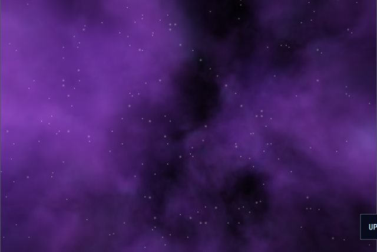
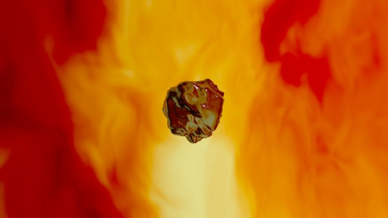
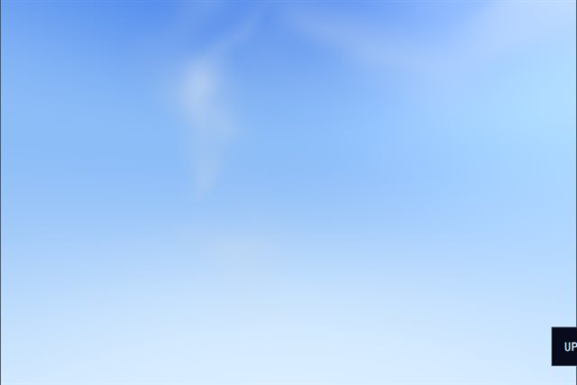
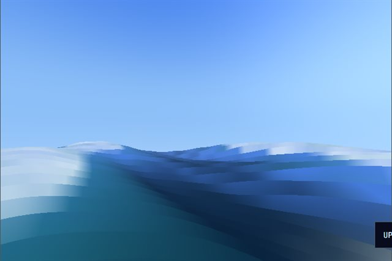
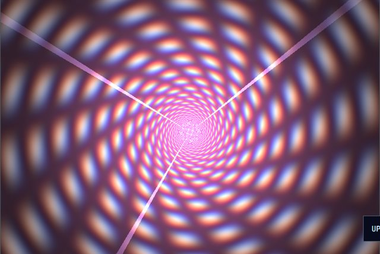
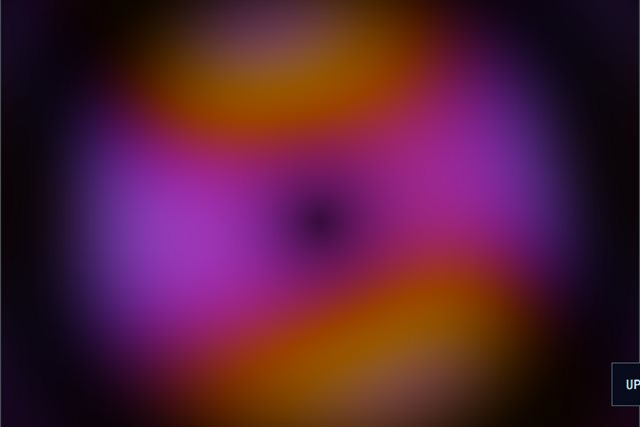
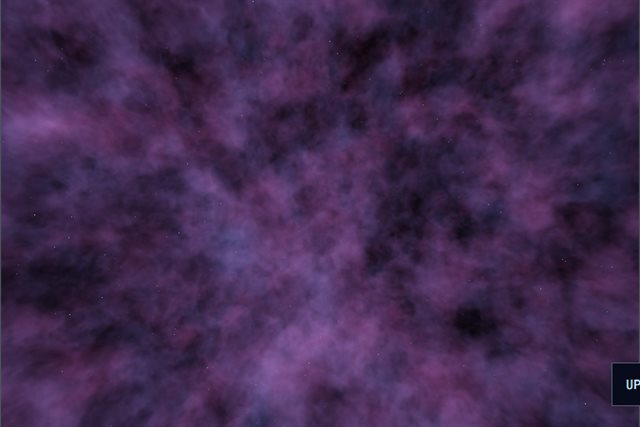
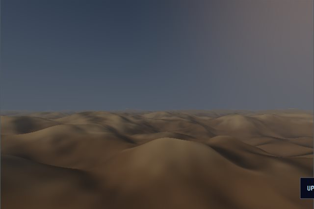

Shader Lab
Live GLSL fragment shaders running in the browser -- raymarched nebulae, flowing terrain and equirectangular WebXR skyboxes you can walk through with A-Frame.
Showcase
Eight live demos -- six on-canvas fragment shaders, two equirectangular skyboxes you can walk through. Use the arrows or #s1 - #s8.
Demos
Click any demo to load it into the showcase -- each thumbnail below is the shader itself, running live.

Deep Field
A raymarched nebula -- domain-warped fbm density sampled along 40 camera rays, with a parallax star layer and soft inner glow.
Run demo ->
Metal Magma Mirror
A chrome model reflecting the magma as a live cubemap -- a flat turntable viewer, no walking. Click to open.
Open viewer ->
Clouds
Lovely drifting cumulus on a bright blue sky -- domain-warped fbm, warm sun glow and a pale horizon.
Run demo ->
Waves
A three.js-style wave plane -- GLSL vertex waves, sun glitter and foam -- that you can walk across in a fullscreen A-Frame window (VR-ready).
Run demo ->
Hyperspace
An accelerating RGB-split tunnel -- per-channel depth offsetting, energy core bloom and radial star streaks.
Run demo ->
Plasma
Classic plasma pushed through an inigo quilez-style palette -- four sine fields folding into shifting electric colour.
Run demo ->
Void Walker
An equirectangular skybox on a huge sphere -- raymarched nebula and starfield, with WASD movement producing real camera parallax.
Run demo ->
Orbital Drift
A raymarched alien world -- fbm terrain, atmosphere haze and a hot sun, rendered as a skybox you can walk across in A-Frame.
Run demo ->Contact
Commission a shader, a WebXR scene or a full web application.
Like what you see? These shaders are built from scratch in GLSL and run entirely in the browser -- the same techniques power interactive WebXR environments and immersive web experiences.
If you have a project that needs raymarching, shaders, 3D or full-stack web development, get in touch.